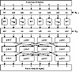

| Previous | Table of Contents | Next |
These are operations in the finite field GF(257), and 45 is a primitive element in that field. In practical implementations of SAFER K-64, it is quicker to implement this in a lookup table than to calculate new results all the time.
Then, sub-blocks are either XORed or added with bytes of subkey K2r. The results of this operation are fed through three layers of linear operations designed to increase the avalanche effect. Each operation is called a Pseudo-Hadamard Transform (PHT). If the inputs to a PHT are a1 and a2, then the outputs are:
After r rounds, there is a final output transformation. This is the same as the first step of each round. B1, B4, B5, and B8 are XORed with the corresponding bytes of the last subkey, and B2, B3, B6, and B7 are added to the corresponding bytes of the last subkey. The result is the ciphertext.

Figure 14.4 One round of SAFER.
Decryption is the reverse process: the output transformation (with subtraction instead of addition), then r reverse rounds. The Inverse PHT (IPHT) is:
Massey recommends 6 rounds, but you can increase that if you want greater security.
Generating subkeys is easy. The first subkey, K1, is simply the user key. Subsequent subkeys are generated by the following procedure:
The symbol “<<<” is a left circular shift or a left rotation. The rotation is byte by byte, and ci is a round constant. If cij is the jth byte of the ith round constant, then you can calculate all of the round constants by the formula
Generally, these values are stored in a table.
SAFER K-128
This alternate key schedule was developed by the Ministry of Home Affairs in Singapore, and then incorporated into SAFER by Massey [1010]. It uses two keys, Ka and Kb, each 64-bits long. The trick is to generate two subkey sequences in parallel, and then alternate subkeys from each sequence. This means that if you choose Ka = Kb, then the 128-bit key is compatible with the 64-bit key Ka.
Security of SAFER K-64
Massey showed that SAFER K-64 is immune to differential cryptanalysis after 8 rounds and is adequately secure against the attack after 6 rounds. After only 3 rounds linear cryptanalysis is ineffective against this algorithm [1010].
Knudsen found a weakness in the key schedule: For virtually every key, there exists at least one (and sometimes as many as nine) other key that encrypts some different plaintext to identical ciphertexts [862]. The number of different plaintexts that encrypt to identical ciphertexts after 6 rounds is anywhere from 222 to 228. While this attack may not impact SAFER’s security when used as an encryption algorithm, it greatly reduces its security when used as a one-way hash function. In any case, Knudsen recommends at least 8 rounds.
SAFER was designed for Cylink, and Cylink is tainted by the NSA [80]. I recommend years of intense cryptanalysis before using SAFER in any form.
3-Way is a block cipher designed by Joan Daemen [402,410]. It has a 96-bit block length and key length, and is designed to be very efficient in hardware.
3-Way is not a Feistel network, but it is an iterated block cipher. 3-Way can have n rounds; Daemen recommends 11.
Description of 3-Way
The algorithm is simple to describe. To encrypt a plaintext block, x:
The functions are:
Decryption is similar to encryption, except that the bits of the input have to be reversed and the bits of the output have to be reversed. Code to implement 3-Way can be found in the back of this book.
So far, there has been no successful cryptanalysis of 3-Way. The algorithm is unpatented.
This algorithm was developed by Burt Kaliski and Matt Robshaw of RSA Laboratories [810]. The idea behind Crab is to use techniques from one-way hash functions to make a fast encryption algorithm. Hence, Crab is very similar to MD5, and this section assumes you are familiar with Section 18.5.
Crab has a very large block: 1024 bytes. Since Crab is presented more as a research contribution than a real algorithm, no definitive key-generation routines are presented. The authors suggest a method that could turn an 80-bit key into three requisite subkeys, although the algorithm could easily accept variable-length keys.
Crab uses two sets of large subkeys:
| Previous | Table of Contents | Next |
){kind=link}
){kind=link}